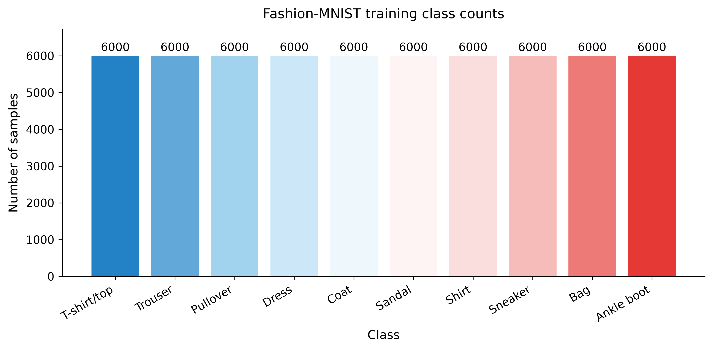
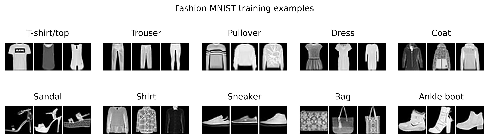
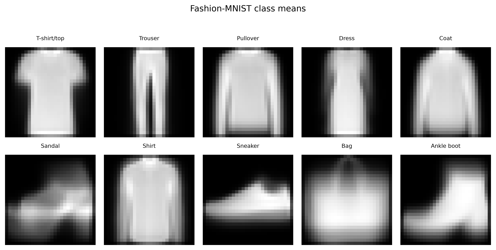
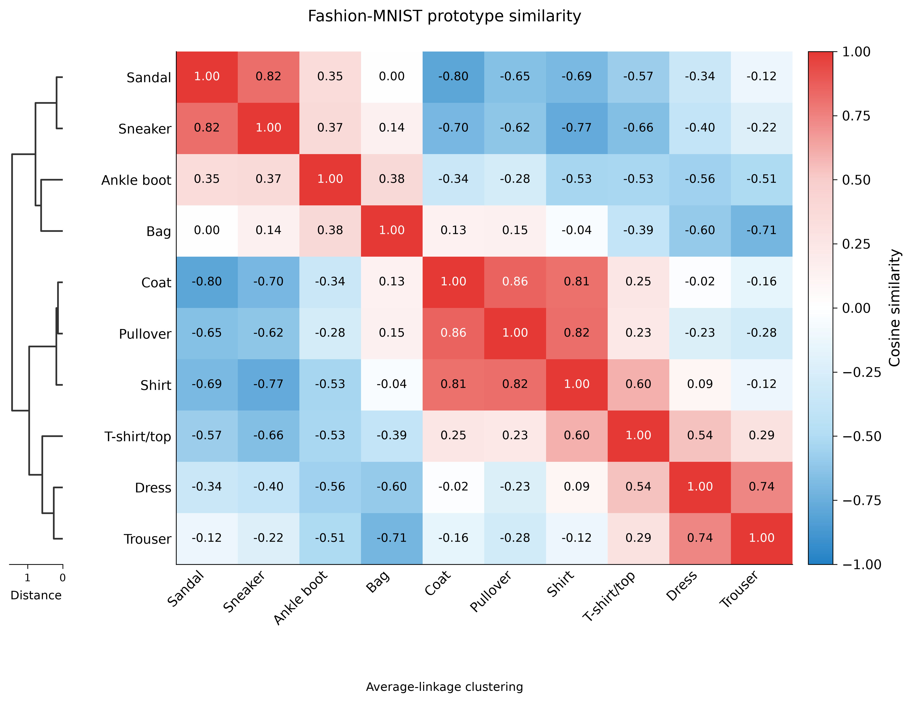
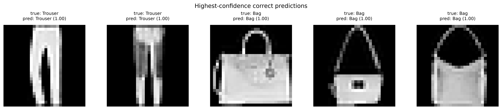
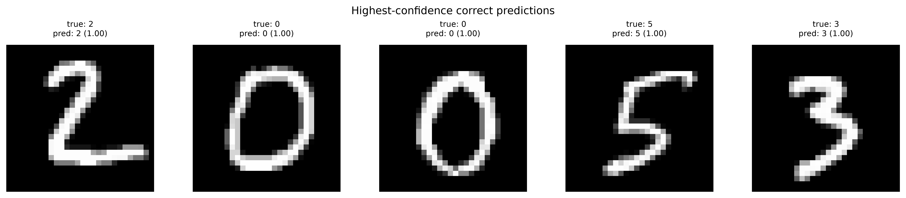
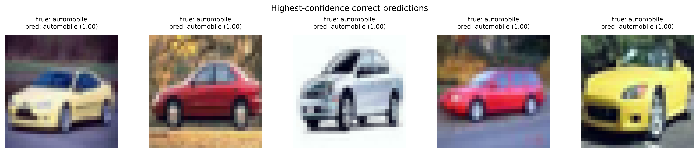

CO3133 · Semester 261 · Group Placeholder
Image classification
From linear models to modern sequence models: a comparative study on Fashion-MNIST.
Deep Learning and Its Applications
Ho Chi Minh City University of Technology – VNU-HCM
Faculty of Computer Science and Engineering · Instructor: Lê Thành Sách
Problem statement
Can image structure improve classification beyond weighted sums of pixels? We compare Linear, MLP, CNN, GRU, LSTM, and Transformer classifiers on the same Fashion-MNIST split. Each image receives one of 10 clothing labels. Low resolution and similar garment outlines make Shirt, Coat, and Pullover difficult to distinguish.
Fashion-MNIST is the main study. MNIST is used for development and debugging; CIFAR-10 is an optional extension. All reported runs use seed 42 and a 50-epoch budget.
Dataset and EDA
Fashion-MNIST (Zalando Research) contains 70,000 labeled product images: 60,000 official training images and 10,000 test images. Inputs are 28 × 28 grayscale pixels; labels cover 10 clothing categories. We use the authors' MIT-licensed distribution in compressed IDX format.
Every class has 6,000 official training images and 1,000 test images, giving a maximum-to-minimum class ratio of 1.00. Class weighting is not needed to compensate for unequal class counts. Our random training/validation split is not stratified, so its per-class counts vary slightly.




About 53.0% of training pixels fall in the lowest intensity bin (below approximately 8/255). With intensity above 32 treated as foreground, mean coverage ranges from 24.5% for Sandal to 59.8% for Pullover. Similar silhouettes motivate examining upper-body garment confusions.
Download EDA statistics. Other dataset sources: MNIST and CIFAR-10.
Experimental setup
| Dataset | Role | Input (C × H × W) | Train | Validation | Test |
|---|---|---|---|---|---|
| Fashion-MNIST | Main comparison | 1 × 28 × 28 | 54,000 | 6,000 | 10,000 |
| MNIST | Development | 1 × 28 × 28 | 54,000 | 6,000 | 10,000 |
| CIFAR-10 | Extension | 3 × 32 × 32 | 45,000 | 5,000 | 10,000 |
A seed-42 random permutation reserves 10% of the official training set for validation. All models share the same indices within each dataset. The official test split is used after selecting the checkpoint with the lowest validation cross-entropy. Training and validation indices do not overlap; cross-split duplicate or product-identity checks have not been completed.
Training uses Adam (learning rate 0.001, β₁ = 0.9, β₂ = 0.999, ε = 10⁻⁸), batch size 128, float32, no weight decay, no scheduler, and no early stopping. Every model trains for 50 epochs. This is a fixed common recipe rather than a separate hyperparameter search for each architecture.
Grayscale training applies random rotation within ±10° and translation up to 10%, then normalization with mean/std 0.5. CIFAR-10 uses a random 32 × 32 crop with 4-pixel padding and horizontal flipping, then channel means (0.4914, 0.4822, 0.4465) and standard deviations (0.2470, 0.2435, 0.2616). Validation and test use the same normalization without augmentation.
A Fashion-MNIST batch contains float32 images [B, 1, 28, 28] and integer labels [B], with B = 128 except for the final partial batch. Normalized grayscale values lie in [−1, 1].
Methodology
| Model | Representation and architecture | Main assumption or limit |
|---|---|---|
| Linear | Flatten pixels → 10 logits | Affine baseline; no learned local filters. |
| MLP | Flatten → 256 → 128 → 10; ReLU and dropout 0.2 | Nonlinear pixel combinations; no spatial weight sharing. |
| CNN | Two 3 × 3 convolution blocks (32/64 channels), BatchNorm, ReLU, 2 × 2 max pooling; flatten → 128 → 10 | Shared local filters; flattening retains position. CNN denotes the spatial variant throughout this page. |
| GRU | Image rows → one recurrent layer, hidden size 128 → final state → 10 | Shared updates across ordered rows; final-state bottleneck. |
| LSTM | Same row sequence and hidden size; gated hidden/cell states → final hidden state → 10 | Memory across rows; sequential processing. |
| Transformer | Row projection to 128 + sinusoidal positions → 2 encoder layers, 4 heads → mean pooling → 10 | Attention connects rows directly; less built-in local spatial structure. |
Grayscale row models use 28 steps with 28 values per step. CIFAR-10 gives 32 steps with 96 values per step. Transformer feed-forward width is 2,048 with dropout 0.1. The group implements model assembly and recurrent cell updates; affine, convolution, normalization, pooling, and Transformer encoder layers use PyTorch modules.
All models minimize cross-entropy directly from logits without a preceding softmax. Accuracy is the fraction of correct labels; macro-F1 averages F1 across 10 classes; recall measures the correctly predicted fraction of each true class. Parameter counts include encoder and classification head.
Hypothesis: nonlinear and structure-aware representations improve on Linear under the common recipe. The changed factor is the model configuration; split, seed, preprocessing, optimizer, epoch budget, and checkpoint rule stay fixed. We assess accuracy, macro-F1, class errors, parameter count, and recorded compute cost. Architecture, size, and regularization change together, so this does not isolate one component's causal effect.
Results
Selected checkpoints are evaluated on the official 10,000-image test sets. These are single-seed results. CNN uses the spatial variant on all three datasets.
Fashion-MNIST — main comparison
| Model | Test accuracy | Macro-F1 | Parameters | Best epoch |
|---|---|---|---|---|
| Linear | 77.05% | 0.7694 | 7,850 | 14 |
| MLP | 87.18% | 0.8711 | 235,146 | 49 |
| CNN | 92.59% | 0.9261 | 421,738 | 42 |
| GRU | 89.88% | 0.8990 | 61,962 | 49 |
| LSTM | 89.52% | 0.8952 | 82,186 | 46 |
| Transformer | 90.43% | 0.9040 | 1,191,050 | 44 |
MNIST — development results
| Model | Test accuracy | Macro-F1 | Parameters | Best epoch |
|---|---|---|---|---|
| Linear | 85.68% | 0.8545 | 7,850 | 28 |
| MLP | 98.45% | 0.9844 | 235,146 | 47 |
| CNN | 99.41% | 0.9941 | 421,738 | 34 |
| GRU | 99.24% | 0.9923 | 61,962 | 46 |
| LSTM | 99.27% | 0.9926 | 82,186 | 38 |
| Transformer | 99.31% | 0.9931 | 1,191,050 | 48 |
CIFAR-10 — extension results
| Model | Test accuracy | Macro-F1 | Parameters | Best epoch |
|---|---|---|---|---|
| Linear | 35.27% | 0.3461 | 30,730 | 36 |
| MLP | 47.67% | 0.4656 | 820,874 | 50 |
| CNN | 79.02% | 0.7880 | 545,194 | 41 |
| GRU | 64.24% | 0.6401 | 88,074 | 45 |
| LSTM | 64.42% | 0.6431 | 117,002 | 48 |
| Transformer | 68.71% | 0.6864 | 1,199,754 | 30 |
All 18 results (CSV) · Run records, histories, and error summaries (JSON)
Recorded compute cost
Saved durations for the main Fashion-MNIST runs are listed below. Training is the recorded total training duration. Inference is accumulated model forward-pass time over 10,000 test images at batch size 128, excluding data loading, device copies, softmax, and metric calculation.
| Model | Training (s) | Test forward passes (s) | Recorded evaluation GPU | Python / PyTorch |
|---|---|---|---|---|
| Linear | 535.15 | 0.0486 | RTX 4060 Laptop GPU | 3.12.14 / 2.14.0+cu126 |
| MLP | 585.05 | 0.0611 | RTX 4060 Laptop GPU | 3.12.14 / 2.14.0+cu126 |
| CNN | 1221.64 | 0.2903 | RTX 4060 Ti | 3.11.11 / 2.14.0+cu126 |
| GRU | 652.48 | 0.3104 | RTX 4060 Laptop GPU | 3.12.14 / 2.14.0+cu126 |
| LSTM | 620.09 | 0.2305 | RTX 4060 Laptop GPU | 3.12.14 / 2.14.0+cu126 |
| Transformer | 684.97 | 0.2689 | RTX 4060 Laptop GPU | 3.12.14 / 2.14.0+cu126 |
Timings use different hardware and lack a shared warm-up and repeated-trial protocol. They document compute cost but do not support a speed ranking. The GPU column comes from evaluation metadata, not a complete training-hardware record.
The LSTM training record explicitly identifies CUDA on RTX 4060 Laptop GPU, Python 3.12.14, PyTorch 2.14.0+cu126, torchvision 0.29.0+cu126, and CUDA build 12.6. Other JSON records identify their evaluation environments; a complete per-run training-environment audit remains a limitation.
Learning curves
Curves use exactly the runs in the result tables. Dots mark the lowest validation loss. Training uses augmentation and configured dropout; validation does not. A training–validation gap alone does not diagnose underfitting.
Fashion-MNIST

CNN reaches its lowest validation loss of 0.1948 at epoch 42. Its final training/validation losses are 0.1765/0.1957.
MNIST learning curves

CNN reaches its lowest validation loss of 0.0170 at epoch 34. Its final training/validation losses are 0.0160/0.0195.
CIFAR-10 learning curves

CNN reaches its lowest validation loss of 0.5946 at epoch 41. Its final training/validation losses are 0.5912/0.5951.
Transformer validation loss reaches its minimum at epoch 30 and then rises as training loss falls, consistent with overfitting in that run. CNN has the lowest minimum validation loss in the updated six-model comparison.
Comparison and discussion
On Fashion-MNIST, MLP improves on Linear by 10.13 percentage points, supporting the value of nonlinear pixel combinations. CNN adds another 5.41 points and leads Transformer by 2.16 points while using 421,738 rather than 1,191,050 parameters. Local filters and spatial feature maps are a plausible advantage for product silhouettes, although size and regularization also differ.
GRU reaches 89.88% with 61,962 parameters: 2.71 points below CNN with approximately 6.8 times fewer parameters. It is a smaller alternative when weight storage matters. Recurrent models summarize rows through a final state; Transformer relates rows directly, but its greater capacity does not yield the highest accuracy under this recipe.
The extension follows the same broad pattern: CNN reaches 79.02% on CIFAR-10, ahead of Transformer at 68.71% by 10.31 points. CNN macro-F1 is 0.7880. MNIST development results are much closer: CNN 99.41% and Transformer 99.31%. These results describe the tested configurations, not the best achievable performance of each family.
Accuracy and parameter count support an accuracy–storage comparison. Timings cannot establish an accuracy–speed trade-off because hardware and measurement conditions differ.
Error analysis
Confusion-matrix rows are true classes and columns are predictions. Cell labels give counts; color gives the fraction of each true class. Recall tables use all 10,000 test images.
Fashion-MNIST CNN Shirt recall is 79.5%, versus 62.1% for MLP. Its strongest classes are Bag (99.2%) and Trouser (99.0%). There are 81 Shirt → T-shirt/top errors and 61 Coat → Pullover errors. Similar silhouettes suggest inspecting finer garment details; targeted augmentation or representation changes need controlled experiments to verify any improvement.
Fashion-MNIST
| True class | Linear recall | MLP recall | CNN recall | GRU recall | LSTM recall | Transformer recall |
|---|---|---|---|---|---|---|
| T-shirt/top | 75.5% | 84.4% | 86.4% | 85.1% | 83.0% | 81.8% |
| Trouser | 90.7% | 97.0% | 99.0% | 97.3% | 98.3% | 98.0% |
| Pullover | 62.8% | 79.8% | 90.1% | 81.6% | 81.6% | 84.0% |
| Dress | 77.0% | 87.5% | 92.9% | 89.5% | 88.7% | 93.2% |
| Coat | 68.1% | 79.7% | 86.3% | 85.4% | 84.6% | 85.6% |
| Sandal | 89.0% | 95.3% | 97.8% | 96.7% | 95.8% | 96.6% |
| Shirt | 40.3% | 62.1% | 79.5% | 72.4% | 70.9% | 72.3% |
| Sneaker | 84.4% | 93.7% | 97.5% | 95.5% | 98.7% | 97.2% |
| Bag | 89.2% | 97.1% | 99.2% | 98.1% | 98.2% | 98.7% |
| Ankle boot | 93.5% | 95.2% | 97.2% | 97.2% | 95.4% | 96.9% |
Confusion matrices


Correct and incorrect predictions
Each panel shows 5 highest-confidence correct predictions or errors. Models use different examples; these selections do not estimate error frequency. A confident mistake alone does not establish poor calibration.

Highest-confidence errors for all 6 models


MNIST error analysis
| True class | Linear recall | MLP recall | CNN recall | GRU recall | LSTM recall | Transformer recall |
|---|---|---|---|---|---|---|
| 0 | 92.9% | 99.2% | 99.8% | 99.4% | 99.7% | 99.5% |
| 1 | 95.0% | 99.7% | 99.4% | 99.8% | 99.9% | 99.7% |
| 2 | 85.6% | 98.6% | 99.4% | 99.5% | 99.3% | 98.9% |
| 3 | 83.7% | 98.3% | 99.5% | 99.4% | 99.6% | 99.6% |
| 4 | 83.2% | 97.6% | 99.5% | 99.0% | 98.6% | 99.0% |
| 5 | 65.4% | 97.9% | 99.3% | 98.5% | 98.9% | 99.0% |
| 6 | 91.1% | 98.9% | 99.0% | 99.3% | 99.1% | 99.2% |
| 7 | 84.6% | 98.2% | 99.6% | 98.7% | 99.4% | 99.7% |
| 8 | 81.6% | 98.2% | 99.7% | 99.7% | 99.2% | 99.5% |
| 9 | 90.6% | 97.7% | 98.9% | 98.9% | 98.9% | 98.9% |
Confusion matrices


Correct and incorrect predictions
Each panel shows 5 highest-confidence correct predictions or errors. Models use different examples; these selections do not estimate error frequency. A confident mistake alone does not establish poor calibration.



CIFAR-10 error analysis
| True class | Linear recall | MLP recall | CNN recall | GRU recall | LSTM recall | Transformer recall |
|---|---|---|---|---|---|---|
| airplane | 35.8% | 52.1% | 83.2% | 71.9% | 72.9% | 73.2% |
| automobile | 44.9% | 53.9% | 91.8% | 71.5% | 77.2% | 81.9% |
| bird | 23.3% | 23.2% | 65.7% | 55.2% | 52.8% | 59.1% |
| cat | 20.6% | 36.5% | 56.3% | 36.4% | 48.6% | 49.4% |
| deer | 22.0% | 27.4% | 80.8% | 53.6% | 49.3% | 57.7% |
| dog | 26.4% | 29.0% | 69.4% | 54.2% | 54.2% | 62.2% |
| frog | 44.4% | 59.9% | 86.8% | 78.2% | 70.7% | 70.4% |
| horse | 41.5% | 62.3% | 84.4% | 70.6% | 70.5% | 77.5% |
| ship | 43.5% | 67.9% | 88.2% | 77.5% | 79.5% | 82.1% |
| truck | 50.3% | 64.5% | 83.6% | 73.3% | 68.5% | 73.6% |
CNN identifies 91.8% of automobiles but 56.3% of cats. Its largest confusions are Cat → Dog (147) and Dog → Cat (136). Inspecting animal appearance and backgrounds may help explain these errors; their causes have not been tested.
Confusion matrices


Correct and incorrect predictions
Each panel shows 5 highest-confidence correct predictions or errors. Models use different examples; these selections do not estimate error frequency. A confident mistake alone does not establish poor calibration.



Conclusion and limitations
CNN is the strongest tested configuration for Fashion-MNIST accuracy and macro-F1, while GRU offers a smaller model with a moderate accuracy cost. The results support using image structure under this recipe. They do not establish a universal architecture ranking or speed advantage.
Only one seed is used per model. Architecture, size, and regularization vary together; no component ablation or systematic hyperparameter search isolates their contributions. Product duplicates across splits have not been audited. Small product images do not represent full scenes or unseen categories. Future work should repeat seeds, control representation or model size, inspect garment errors, and benchmark inference under matched conditions.
Reproduction and run records
Run commands from the repository root. Datasets download automatically. Use matching dataset/config pairs. Training writes the selected checkpoint before evaluation reads it.
uv sync --locked --dev
uv run python -m scripts.eda.run_fashion_mnist
# Repeat for: linear mlp cnn gru lstm transformer
uv run python -m scripts.training.train_image_classification --data fashion_mnist --config configs/image_classification/fashion_mnist/cnn.yaml
uv run python -m scripts.evaluation.evaluate --data fashion_mnist --config configs/image_classification/fashion_mnist/cnn.yamlThe CNN checkpoint is checkpoints/fashion_mnist_cnn_spatial_seed42/best.pt; other Fashion-MNIST run names use fashion_mnist_<model>_seed42. MNIST and CIFAR-10 use matching configuration directories. Reconstruction requires training; checkpoint weights are not bundled with this site.
Experiment records provide configurations, seed, checkpoint path/epoch, saved revision, histories, and error summaries for all 18 selected runs. Some recorded revisions have a -dirty suffix: uncommitted changes existed at evaluation time, so those hashes alone do not identify the full historical source state. Local prediction tensors must be regenerated from checkpoints.
A1 integration code · README. To rebuild this page and the selected-run figures after evaluation:
uv run python -m scripts.maintenance.build_a1_webReport, slides, and presentation
- Final report: Read PDF · Download PDF
- Presentation slides: Download PowerPoint
- YouTube presentation: Watch the group presentation
- Source code: A1 integration branch
- Checkpoints: Training and reconstruction instructions
- AI usage: Assignment 1 disclosure · Detailed log
- Results: CSV · JSON evidence
AI Usage Disclosure — Assignment 1
The group used Codex/GPT and Claude tools for scaffolding, coding and integration support, model review, EDA, test generation, report preparation, slides, video narration, and this website. AI generated some code and text as well as reviewing existing work. Members remain responsible for understanding and verifying their submitted contributions.
Entry 1 — Le Nguyen Khang (2352470)
| Field | Disclosure |
|---|---|
| Tool / model | GPT-5.6 Sol (Light) |
| Used by | Le Nguyen Khang (2352470) |
| Date / development stage | 2026-09-15 - Scaffolding |
| Purpose | Implement the structure of the project with blank files to ensure consistency. |
| Affected sections / files | All source files. |
| How the output was edited and verified | The whole structure of the codebase is generated while leaving the main code untouched. These are left blank to be implemented with care and knowledge by other students. GPT does not guide the implementation. |
Representative prompt:
Scaffold the blank project. DO NOT implement the functions or classes in the source files.
Technical requirements: The blank project should have different composable modules for training, validation, configuration, utilities.
Use factory pattern to assign different models and datasets without modifying the core training loop and avoid code duplication (BAD CODE).
Write the blank functions and classes in the source files. DO NOT implement.
Behavioral requirements: Use uv, ruff, and ty check for blazing fast development. Pre-commit hooks for code quality.Entry 2 — Le Nguyen Khang (2352470)
| Field | Disclosure |
|---|---|
| Tool / model | Codex |
| Used by | Le Nguyen Khang (2352470) |
| Date / development stage | 2026-09-21 - Assignment 1 draft integration |
| Purpose | Connect and verify the Fashion-MNIST draft pipeline, including the MLP, classification head, training entry point, configurations, tests, experiment runs, and draft result text. |
| Affected sections / files | Dataset exports; model and configuration modules; training and evaluation scripts; tests; Assignment 1 page; draft report; generated EDA and experiment artifacts. |
| Representative prompt | "Become the AI graders and check for me what have we done in progress and what are the remaining tasks that do we have to do? Score us over the scale of 10." |
| How the output was edited and verified | Ruff, ty, and the full test suite were run. The MLP was checked by overfitting one real batch. Linear and MLP were trained on the same seed-42 split, selected by validation loss, and evaluated once on the official test split. All reported values were copied from saved JSON result records. |
Entry 3 — Tran Lam Anh (2352067)
| Field | Disclosure |
|---|---|
| Tool / model | Claude Sonnet 5 (Claude Code) |
| Used by | Tran Lam Anh (2352067) |
| Date / development stage | 2026-09-23 - Assignment 1 exploratory data analysis |
| Purpose | Extend the EDA beyond the four items required in Section 13 of the course handbook, and remove the duplication between the two dataset entry points. Added train-vs-test split comparison, pixel-intensity distribution, per-class average images, a class-prototype similarity matrix, per-class foreground coverage, and a machine-readable summary.json. |
| Affected sections / files | src/data/eda.py, src/data/eda_plots.py, src/data/eda_report.py, scripts/eda/run_fashion_mnist.py, scripts/eda/run_mnist.py, tests/test_eda.py, README.md, report Part 1 (Problem and data), and the regenerated Fashion-MNIST EDA figures. |
| Representative prompt | "I think there should be more EDA to see more about data, what should be them? List out so that I can choose." |
| AI contribution | The student set the goal, the scope and the target branch, and decided which of the proposed analyses to keep and what to report. The model proposed the candidate analyses, explained what each one shows, and wrote the implementation, the unit tests and the accompanying text. |
| How the output was edited and verified | Ruff lint and format and the full test suite (57 tests) were run, including 17 new unit tests that check every statistic against a six-image toy dataset with hand-computed expected values. Both EDA entry points were executed end to end on the real datasets and every generated figure was inspected. One figure drafted for the report (the share of pixels in the darkest intensity bin) was wrong and was corrected against summary.json before committing. The similarity matrix was cross-checked against the confusion pairs already reported in the draft error analysis, and the MNIST run against the well-known 4/9 and 7/9 confusions. |
Entry 4 — Tran Nguyen Giap (2352284)
| Field | Disclosure |
|---|---|
| Tool / model | Claude Opus 5.5 (Medium) |
| Used by | Tran Nguyen Giap (2352284) |
| Date / development stage | 2026-10-26 - Models |
| Purpose | Check my implementation of some models. |
| Affected sections / files | Models/ folder |
| How the output was edited and verified | The implementation is compared with standard library like timm, pytorch models. |
Representative prompt:
Here is my implementation of Linear, RNN, and CNN. Check if they are correct and mark what is wrong.Entry 5 — Tran Lam Anh (2352067).
| Field | Disclosure |
|---|---|
| Tool / model | Codex (GPT-6). |
| Used by | Tran Lam Anh (2352067). |
| Date / development stage | 2026-10-27 - Assignment 1, Part 1 report preparation. |
| Purpose | Complete Problem and Data Description in the existing group LaTeX report, covering the task, dataset, EDA, split protocol, and preprocessing. |
| Affected sections / files | reports/a1/Sections/3-Problem-and-Data.tex, Tables/data_splits.tex, two report images, supporting references, and this use's report disclosure. |
| Representative prompt (translated) | "Write report Part 1 as planned, then let me review it. Push only after I approve." |
| AI contribution | Drafted and edited the English text and table; prepared a compact grid of real Fashion-MNIST images and a heatmap of the saved class-similarity statistics. Added source citations and prepared a PDF review copy. |
| Verification | The assistant checked counts, seed, split logic, normalization, and augmentation against the code and configurations; recomputed the saved EDA mean, standard deviation, and lowest-bin pixel share from the local dataset; checked the four download checksums; and inspected an actual validation batch. The student approved publication on 2026-10-27. No training or model-evaluation run was added for this writing task. |
Entry 6 — Vu Duc Viet Anh (2352074)
| Field | Disclosure |
|---|---|
| Tool / model | Codex |
| Used by | Vu Duc Viet Anh (2352074) |
| Date / development stage | Assignment 1 - LSTM pipeline and training-code review. |
| Purpose | Use AI as a supporting code-review tool to check the existing LSTM pipeline and image-classification training code for possible bugs or inconsistencies. The scope was reviewing existing code and understanding potential issues. |
| Affected sections / files | src/models/lstm.py, scripts/training/train_image_classification.py. |
| How the output was edited and verified | Codex provided review feedback on the existing implementation. Its role was to support code checking, rather than supply a complete replacement pipeline. Specific code edits and verification runs are not recorded for this review. |
Representative prompt:
Please check my existing LSTM pipeline and the Assignment 1 training code in scripts/training for possible errors and explain the issues you identify.Entry 7 — Vu Duc Viet Anh (2352074)
| Field | Disclosure |
|---|---|
| Tool / model | Codex |
| Used by | Vu Duc Viet Anh (2352074) |
| Date / development stage | Assignment 1 - Model unit-test development. |
| Purpose | Use AI to generate supporting unit-test code for checking whether the existing Assignment 1 model implementations behave as expected. |
| Affected sections / files | tests/components/test_models.py. |
| AI contribution | Drafted test cases and assertions to support validation of the existing models. The AI-generated code for this use concerns the tests. |
| How the output was edited and verified | The current test file includes checks for model-factory dispatch, output shapes, forward/backward behavior, finite loss and gradients, invalid inputs, checkpoint reloading, and comparisons of custom LSTM/GRU outputs with PyTorch under matched weights. No test-run result is recorded for this use. |
Representative prompt:
Generate unit tests in tests/test_models.py to check whether the Assignment 1 models behave as expected. Include assertions that can reveal implementation errors.Entry 8 — Vu Duc Viet Anh (2352074)
| Field | Disclosure |
|---|---|
| Tool / model | Codex |
| Used by | Vu Duc Viet Anh (2352074) |
| Date / development stage | 2026-10-28 - Assignment 1 presentation and website preparation. |
| Purpose | Support slide updates, draft and revise the English YouTube narration for four speakers, and complete the Assignment 1 website using the final report, slides, and saved experiment results. |
| Affected sections / files | Assignment 1 PowerPoint and narration files; web/index.html; web/assignment1.html; web/data/a1/; web/downloads/a1/; website figures; scripts/maintenance/build_a1_web.py; scripts/evaluation/compare.py; tests/components/test_comparison.py. |
| Representative prompt (translated) | "Complete the Assignment 1 website using Placeholder_A1_Report.pdf and Placeholder_A1_Slide.pptx in .tmp, and the YouTube link already provided." |
| AI contribution | Drafted and edited narration, assisted with slide result updates, generated website text and HTML, selected saved experiment records, and prepared downloadable evidence and figures. Completed the shared landing-page directory and changed comparison selection to exclude legacy CNN runs. This included content generation as well as review assistance. |
| How the output was edited and verified | Narration was revised according to the student’s speaker allocation and number-format instructions. Website figures and tables are built from an explicit list of 18 saved seed-42, 50-epoch runs, with the spatial CNN variant selected for every dataset. Automated checks validate record counts, checkpoint-selection losses, result values, links, and copied download checksums. These checks do not establish that a student has completed final review. |
| Member responsible for final verification | Vu Duc Viet Anh (2352074); final student review of these website and presentation changes is pending. |
| Sources used for verification | Saved test_result.json, training_summary.json, and test_error_analysis.json records; Fashion-MNIST EDA summary; model and evaluation source code; the supplied final report and slides. |
The detailed log records which checks were performed and identifies the member responsible for final review.
Group members
| Member | Student ID | Main A1 contribution |
|---|---|---|
| Vũ Đức Việt Anh | 2352074 | Website, training pipeline, LSTM |
| Trần Lâm Anh | 2352067 | Data loading, preprocessing, EDA, Transformer, metrics |
| Lê Nguyên Khang | 2352470 | Error analysis, GRU, shared utilities, review |
| Trần Nguyên Giáp | 2352284 | Linear/CNN models, evaluation pipeline |